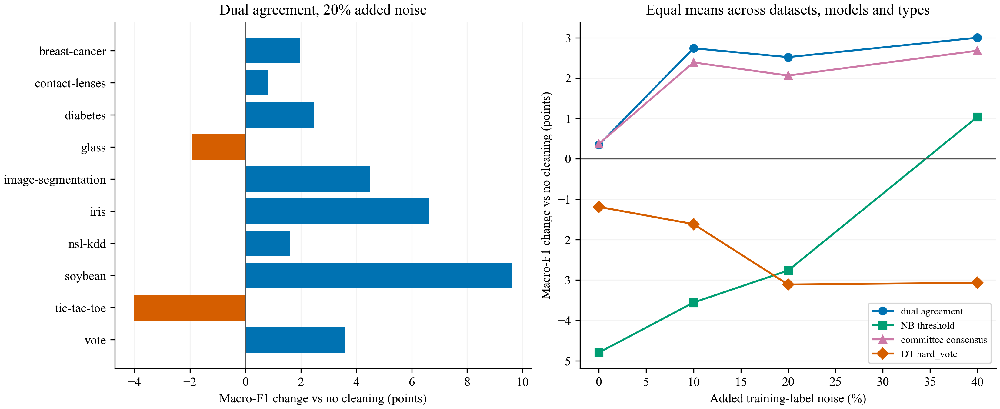

Primary result: +2.52 macro-F1 points; p=0.084. This does not establish overall improvement at the locked 0.05 threshold.
Corrections preserve rows. Only known injected corruptions are detection ground truth; original labels are unverified references. No novelty claim or guarantee of real-world noise improvement. The primary is fixed; other comparisons and MLP transfer are descriptive. All ten datasets retained. No-cleaning and reference-label training are separate controls. Singleton protection may reduce recall.

| delta_accuracy | delta_macro_f1 | ||
|---|---|---|---|
| dataset | rate | ||
| breast-cancer | 0.0 | 2.486 | 3.369 |
| 0.2 | 1.204 | 1.972 | |
| contact-lenses | 0.0 | 1.852 | 3.591 |
| 0.2 | -0.463 | 0.813 | |
| diabetes | 0.0 | 1.114 | 1.423 |
| 0.2 | 1.968 | 2.470 | |
| glass | 0.0 | -4.673 | -3.418 |
| 0.2 | -3.427 | -1.938 | |
| image-segmentation | 0.0 | -0.495 | -0.470 |
| 0.2 | 4.307 | 4.485 | |
| iris | 0.0 | 0.074 | 0.075 |
| 0.2 | 6.593 | 6.622 | |
| nsl-kdd | 0.0 | 0.729 | 0.607 |
| 0.2 | -0.605 | 1.602 | |
| soybean | 0.0 | -0.634 | -0.400 |
| 0.2 | 6.995 | 9.627 | |
| tic-tac-toe | 0.0 | -1.415 | -1.327 |
| 0.2 | -3.746 | -4.024 | |
| vote | 0.0 | 0.026 | 0.049 |
| 0.2 | 3.448 | 3.577 |
| true_noise_pct | post_noise_pct | precision | recall | false_positive_rate | |
|---|---|---|---|---|---|
| rate | |||||
| 0.0 | 0.000 | 5.441 | 0.000 | NaN | 0.054 |
| 0.1 | 9.790 | 10.135 | 0.550 | 0.527 | 0.060 |
| 0.2 | 19.889 | 16.644 | 0.640 | 0.464 | 0.071 |
| 0.4 | 39.905 | 33.780 | 0.673 | 0.349 | 0.118 |
Zero-added-noise correction changes roughly 5.44% of reference labels. Original labels are unverified; this is a reference-label disagreement rate, not proof of genuine new noise. At zero added noise, Glass, image segmentation, soybean and tic-tac-toe lose macro-F1; Glass and tic-tac-toe have the largest losses. Mean gains are concentrated in the DT classifier; LR/NB are mixed.
All three locked runs passed row-count, duplicate, finite-score and code/data-hash checks. Both relabel runs retained every training row; deletion passed expected row-removal checks.
{
"main": {
"datasets": [
"breast-cancer",
"contact-lenses",
"diabetes",
"glass",
"iris",
"soybean",
"vote",
"image-segmentation",
"tic-tac-toe",
"nsl-kdd"
],
"seeds": 3,
"rates": [
0,
0.1,
0.2,
0.4
],
"classifiers": [
"NB",
"DT",
"LR"
],
"handling": "relabel",
"minutes": 146.12094506820043
},
"delete": {
"datasets": [
"breast-cancer",
"contact-lenses",
"diabetes",
"glass",
"iris",
"soybean",
"vote",
"image-segmentation",
"tic-tac-toe",
"nsl-kdd"
],
"seeds": 1,
"rates": [
0.0,
0.2
],
"classifiers": [
"NB",
"DT",
"LR"
],
"handling": "delete",
"minutes": 20.756052498022715
},
"mlp": {
"datasets": [
"iris",
"diabetes",
"vote"
],
"seeds": 1,
"rates": [
0.0,
0.2
],
"classifiers": [
"MLP"
],
"handling": "relabel",
"minutes": 4.760612118244171
}
}| delta_accuracy | delta_macro_f1 | ||
|---|---|---|---|
| dataset | rate | ||
| breast-cancer | 0.0 | 1.166 | 1.696 |
| 0.2 | -0.583 | -0.029 | |
| contact-lenses | 0.0 | 2.778 | 4.900 |
| 0.2 | 0.694 | 1.522 | |
| diabetes | 0.0 | 0.911 | 1.158 |
| 0.2 | 1.693 | 1.837 | |
| glass | 0.0 | -2.492 | 0.641 |
| 0.2 | 0.000 | 1.670 | |
| image-segmentation | 0.0 | -0.159 | -0.109 |
| 0.2 | 4.978 | 5.208 | |
| iris | 0.0 | -0.222 | -0.221 |
| 0.2 | 4.556 | 4.587 | |
| nsl-kdd | 0.0 | 0.618 | 1.152 |
| 0.2 | 1.038 | 1.855 | |
| soybean | 0.0 | -0.586 | -0.300 |
| 0.2 | 6.881 | 9.718 | |
| tic-tac-toe | 0.0 | 0.000 | 0.051 |
| 0.2 | -1.009 | -1.087 | |
| vote | 0.0 | 0.383 | 0.421 |
| 0.2 | 2.912 | 3.005 |
| delta_accuracy | delta_macro_f1 | ||
|---|---|---|---|
| dataset | rate | ||
| diabetes | 0.0 | -1.432 | -0.994 |
| 0.2 | -1.562 | -0.676 | |
| iris | 0.0 | 0.667 | 0.719 |
| 0.2 | 3.333 | 3.432 | |
| vote | 0.0 | -0.230 | -0.210 |
| 0.2 | 1.379 | 1.545 |
MLP transfer is heterogeneous: gains on Iris/Vote, loss on Diabetes; zero-added-noise mean is negative. It does not establish broad improvement or harmlessness.
# E12v2 results
Reference labels are unverified; detection is against injected corruption only.
No novelty claim. Full thresholded Confident Learning is not implemented.
Primary metrics pool confusion matrices across outer folds per seed, using all dataset classes.
## Primary: dual agreement vs no cleaning at 20% added noise
delta_accuracy delta_macro_f1
dataset
breast-cancer 1.204 1.972
contact-lenses -0.463 0.813
diabetes 1.968 2.470
glass -3.427 -1.938
image-segmentation 4.307 4.485
iris 6.593 6.622
nsl-kdd -0.605 1.602
soybean 6.995 9.627
tic-tac-toe -3.746 -4.024
vote 3.448 3.577
Dataset-level mean macro-F1 delta: 2.520 points; two-sided Wilcoxon p=0.0839844.
Accuracy and all other arm comparisons are descriptive secondary results.
## All downstream means
kind rate handling arm classifier accuracy macro_f1 delta_accuracy delta_macro_f1
pairflip 0.0 relabel DT hard_vote DT 83.013 77.969 -2.398 -2.349
pairflip 0.0 relabel DT hard_vote LR 85.894 80.237 -0.185 0.671
pairflip 0.0 relabel DT hard_vote NB 76.047 70.777 -1.912 -1.889
pairflip 0.0 relabel DT threshold DT 82.913 77.904 -2.498 -2.414
pairflip 0.0 relabel DT threshold LR 85.819 80.210 -0.260 0.645
pairflip 0.0 relabel DT threshold NB 75.988 70.740 -1.970 -1.926
pairflip 0.0 relabel NB hard_vote DT 77.374 72.328 -8.036 -7.990
pairflip 0.0 relabel NB hard_vote LR 78.631 73.175 -7.448 -6.391
pairflip 0.0 relabel NB hard_vote NB 74.672 69.821 -3.287 -2.845
pairflip 0.0 relabel NB threshold DT 78.489 73.470 -6.921 -6.848
pairflip 0.0 relabel NB threshold LR 79.666 74.335 -6.413 -5.231
pairflip 0.0 relabel NB threshold NB 74.765 70.357 -3.193 -2.309
pairflip 0.0 relabel committee consensus DT 85.744 80.729 0.333 0.411
pairflip 0.0 relabel committee consensus LR 86.785 81.555 0.706 1.989
pairflip 0.0 relabel committee consensus NB 76.503 71.386 -1.455 -1.280
pairflip 0.0 relabel dual agreement DT 85.862 80.570 0.451 0.252
pairflip 0.0 relabel dual agreement LR 86.090 80.537 0.011 0.972
pairflip 0.0 relabel dual agreement NB 77.216 72.493 -0.743 -0.174
pairflip 0.0 relabel none DT 85.411 80.318 0.000 0.000
pairflip 0.0 relabel none LR 86.079 79.566 0.000 0.000
pairflip 0.0 relabel none NB 77.959 72.666 0.000 0.000
pairflip 0.0 relabel reference labels DT 85.411 80.318 0.000 0.000
pairflip 0.0 relabel reference labels LR 86.079 79.566 0.000 0.000
pairflip 0.0 relabel reference labels NB 77.959 72.666 0.000 0.000
pairflip 0.1 relabel DT hard_vote DT 74.455 68.702 -3.263 -3.550
pairflip 0.1 relabel DT hard_vote LR 82.315 75.777 -1.367 -0.743
pairflip 0.1 relabel DT hard_vote NB 71.521 68.172 -1.541 0.091
pairflip 0.1 relabel DT threshold DT 74.585 68.846 -3.133 -3.407
pairflip 0.1 relabel DT threshold LR 82.269 75.792 -1.413 -0.728
pairflip 0.1 relabel DT threshold NB 71.448 68.114 -1.613 0.033
pairflip 0.1 relabel NB hard_vote DT 71.503 66.839 -6.215 -5.413
pairflip 0.1 relabel NB hard_vote LR 71.702 67.520 -11.981 -9.001
pairflip 0.1 relabel NB hard_vote NB 69.946 66.180 -3.115 -1.901
pairflip 0.1 relabel NB threshold DT 73.385 69.293 -4.333 -2.959
pairflip 0.1 relabel NB threshold LR 73.972 70.130 -9.710 -6.390
pairflip 0.1 relabel NB threshold NB 70.800 67.830 -2.261 -0.250
pairflip 0.1 relabel committee consensus DT 81.649 76.443 3.931 4.191
pairflip 0.1 relabel committee consensus LR 83.985 78.064 0.303 1.544
pairflip 0.1 relabel committee consensus NB 73.736 69.421 0.674 1.340
pairflip 0.1 relabel dual agreement DT 81.777 76.890 4.059 4.638
pairflip 0.1 relabel dual agreement LR 84.500 78.706 0.817 2.186
pairflip 0.1 relabel dual agreement NB 73.591 69.564 0.530 1.483
pairflip 0.1 relabel none DT 77.718 72.252 0.000 0.000
pairflip 0.1 relabel none LR 83.682 76.520 0.000 0.000
pairflip 0.1 relabel none NB 73.061 68.081 0.000 0.000
pairflip 0.1 relabel reference labels DT 85.411 80.318 7.693 8.065
pairflip 0.1 relabel reference labels LR 86.079 79.566 2.397 3.046
pairflip 0.1 relabel reference labels NB 77.959 72.666 4.897 4.586
pairflip 0.2 relabel DT hard_vote DT 66.310 61.227 -3.675 -3.673
pairflip 0.2 relabel DT hard_vote LR 77.600 70.596 -3.672 -3.660
pairflip 0.2 relabel DT hard_vote NB 67.944 63.241 -1.594 -0.307
pairflip 0.2 relabel DT threshold DT 66.419 61.465 -3.565 -3.435
pairflip 0.2 relabel DT threshold LR 77.533 70.624 -3.739 -3.632
pairflip 0.2 relabel DT threshold NB 67.922 63.240 -1.616 -0.308
pairflip 0.2 relabel NB hard_vote DT 68.143 63.039 -1.842 -1.860
pairflip 0.2 relabel NB hard_vote LR 67.755 62.781 -13.517 -11.475
pairflip 0.2 relabel NB hard_vote NB 66.903 62.796 -2.635 -0.752
pairflip 0.2 relabel NB threshold DT 68.813 64.270 -1.171 -0.630
pairflip 0.2 relabel NB threshold LR 69.471 65.002 -11.801 -9.254
pairflip 0.2 relabel NB threshold NB 67.434 64.000 -2.104 0.452
pairflip 0.2 relabel committee consensus DT 74.955 69.953 4.970 5.053
pairflip 0.2 relabel committee consensus LR 80.239 73.685 -1.033 -0.571
pairflip 0.2 relabel committee consensus NB 69.997 65.845 0.459 2.297
pairflip 0.2 relabel dual agreement DT 75.353 70.476 5.368 5.576
pairflip 0.2 relabel dual agreement LR 80.858 74.913 -0.413 0.657
pairflip 0.2 relabel dual agreement NB 69.956 65.837 0.418 2.290
pairflip 0.2 relabel none DT 69.985 64.900 0.000 0.000
pairflip 0.2 relabel none LR 81.272 74.256 0.000 0.000
pairflip 0.2 relabel none NB 69.538 63.548 0.000 0.000
pairflip 0.2 relabel reference labels DT 85.411 80.318 15.426 15.418
pairflip 0.2 relabel reference labels LR 86.079 79.566 4.807 5.310
pairflip 0.2 relabel reference labels NB 77.959 72.666 8.421 9.118
pairflip 0.4 relabel DT hard_vote DT 53.988 49.723 -1.389 -1.917
pairflip 0.4 relabel DT hard_vote LR 63.875 56.463 -4.155 -4.410
pairflip 0.4 relabel DT hard_vote NB 57.016 52.201 -1.822 -1.292
pairflip 0.4 relabel DT threshold DT 53.824 49.642 -1.554 -1.997
pairflip 0.4 relabel DT threshold LR 63.856 56.573 -4.173 -4.300
pairflip 0.4 relabel DT threshold NB 56.747 51.962 -2.091 -1.532
pairflip 0.4 relabel NB hard_vote DT 59.178 53.884 3.800 2.245
pairflip 0.4 relabel NB hard_vote LR 58.909 53.377 -9.121 -7.496
pairflip 0.4 relabel NB hard_vote NB 58.646 53.353 -0.191 -0.141
pairflip 0.4 relabel NB threshold DT 59.912 55.159 4.534 3.520
pairflip 0.4 relabel NB threshold LR 59.576 54.477 -8.453 -6.395
pairflip 0.4 relabel NB threshold NB 59.422 54.693 0.585 1.199
pairflip 0.4 relabel committee consensus DT 61.342 56.892 5.964 5.253
pairflip 0.4 relabel committee consensus LR 66.675 59.534 -1.354 -1.339
pairflip 0.4 relabel committee consensus NB 60.408 55.570 1.570 2.076
pairflip 0.4 relabel dual agreement DT 61.835 57.534 6.457 5.895
pairflip 0.4 relabel dual agreement LR 66.862 59.939 -1.168 -0.934
pairflip 0.4 relabel dual agreement NB 59.409 54.742 0.571 1.248
pairflip 0.4 relabel none DT 55.378 51.639 0.000 0.000
pairflip 0.4 relabel none LR 68.029 60.873 0.000 0.000
pairflip 0.4 relabel none NB 58.838 53.494 0.000 0.000
pairflip 0.4 relabel reference labels DT 85.411 80.318 30.033 28.679
pairflip 0.4 relabel reference labels LR 86.079 79.566 18.050 18.693
pairflip 0.4 relabel reference labels NB 77.959 72.666 19.121 19.172
symmetric 0.0 relabel DT hard_vote DT 83.013 77.969 -2.398 -2.349
symmetric 0.0 relabel DT hard_vote LR 85.894 80.237 -0.185 0.671
symmetric 0.0 relabel DT hard_vote NB 76.047 70.777 -1.912 -1.889
symmetric 0.0 relabel DT threshold DT 82.913 77.904 -2.498 -2.414
symmetric 0.0 relabel DT threshold LR 85.819 80.210 -0.260 0.645
symmetric 0.0 relabel DT threshold NB 75.988 70.740 -1.970 -1.926
symmetric 0.0 relabel NB hard_vote DT 77.374 72.328 -8.036 -7.990
symmetric 0.0 relabel NB hard_vote LR 78.631 73.175 -7.448 -6.391
symmetric 0.0 relabel NB hard_vote NB 74.672 69.821 -3.287 -2.845
symmetric 0.0 relabel NB threshold DT 78.489 73.470 -6.921 -6.848
symmetric 0.0 relabel NB threshold LR 79.666 74.335 -6.413 -5.231
symmetric 0.0 relabel NB threshold NB 74.765 70.357 -3.193 -2.309
symmetric 0.0 relabel committee consensus DT 85.744 80.729 0.333 0.411
symmetric 0.0 relabel committee consensus LR 86.785 81.555 0.706 1.989
symmetric 0.0 relabel committee consensus NB 76.503 71.386 -1.455 -1.280
symmetric 0.0 relabel dual agreement DT 85.862 80.570 0.451 0.252
symmetric 0.0 relabel dual agreement LR 86.090 80.537 0.011 0.972
symmetric 0.0 relabel dual agreement NB 77.216 72.493 -0.743 -0.174
symmetric 0.0 relabel none DT 85.411 80.318 0.000 0.000
symmetric 0.0 relabel none LR 86.079 79.566 0.000 0.000
symmetric 0.0 relabel none NB 77.959 72.666 0.000 0.000
symmetric 0.0 relabel reference labels DT 85.411 80.318 0.000 0.000
symmetric 0.0 relabel reference labels LR 86.079 79.566 0.000 0.000
symmetric 0.0 relabel reference labels NB 77.959 72.666 0.000 0.000
symmetric 0.1 relabel DT hard_vote DT 72.823 65.848 -4.677 -4.827
symmetric 0.1 relabel DT hard_vote LR 81.931 74.525 -0.839 -0.593
symmetric 0.1 relabel DT hard_vote NB 70.275 66.117 -1.336 -0.064
symmetric 0.1 relabel DT threshold DT 73.175 66.220 -4.325 -4.455
symmetric 0.1 relabel DT threshold LR 81.979 74.645 -0.791 -0.473
symmetric 0.1 relabel DT threshold NB 70.230 66.078 -1.382 -0.102
symmetric 0.1 relabel NB hard_vote DT 70.282 65.543 -7.218 -5.132
symmetric 0.1 relabel NB hard_vote LR 70.809 65.587 -11.961 -9.531
symmetric 0.1 relabel NB hard_vote NB 69.353 65.375 -2.259 -0.806
symmetric 0.1 relabel NB threshold DT 71.721 66.803 -5.778 -3.873
symmetric 0.1 relabel NB threshold LR 73.092 67.291 -9.678 -7.827
symmetric 0.1 relabel NB threshold NB 69.775 66.138 -1.837 -0.043
symmetric 0.1 relabel committee consensus DT 80.872 74.134 3.373 3.459
symmetric 0.1 relabel committee consensus LR 84.289 77.596 1.519 2.477
symmetric 0.1 relabel committee consensus NB 71.291 67.503 -0.321 1.322
symmetric 0.1 relabel dual agreement DT 81.489 74.629 3.990 3.953
symmetric 0.1 relabel dual agreement LR 84.220 77.622 1.450 2.504
symmetric 0.1 relabel dual agreement NB 71.439 67.855 -0.172 1.674
symmetric 0.1 relabel none DT 77.499 70.675 0.000 0.000
symmetric 0.1 relabel none LR 82.770 75.118 0.000 0.000
symmetric 0.1 relabel none NB 71.612 66.180 0.000 0.000
symmetric 0.1 relabel reference labels DT 85.411 80.318 7.911 9.642
symmetric 0.1 relabel reference labels LR 86.079 79.566 3.309 4.448
symmetric 0.1 relabel reference labels NB 77.959 72.666 6.347 6.486
symmetric 0.2 relabel DT hard_vote DT 65.390 58.250 -3.684 -3.758
symmetric 0.2 relabel DT hard_vote LR 77.577 69.426 -3.869 -4.590
symmetric 0.2 relabel DT hard_vote NB 68.194 62.935 -4.119 -2.677
symmetric 0.2 relabel DT threshold DT 65.637 58.540 -3.437 -3.469
symmetric 0.2 relabel DT threshold LR 77.486 69.389 -3.960 -4.627
symmetric 0.2 relabel DT threshold NB 68.228 63.055 -4.085 -2.557
symmetric 0.2 relabel NB hard_vote DT 69.090 63.688 0.017 1.679
symmetric 0.2 relabel NB hard_vote LR 70.400 64.192 -11.046 -9.824
symmetric 0.2 relabel NB hard_vote NB 68.072 63.745 -4.241 -1.868
symmetric 0.2 relabel NB threshold DT 69.617 64.367 0.543 2.359
symmetric 0.2 relabel NB threshold LR 71.811 65.949 -9.635 -8.066
symmetric 0.2 relabel NB threshold NB 67.909 64.164 -4.403 -1.448
symmetric 0.2 relabel committee consensus DT 75.723 68.329 6.649 6.320
symmetric 0.2 relabel committee consensus LR 81.335 74.117 -0.111 0.101
symmetric 0.2 relabel committee consensus NB 69.750 64.796 -2.562 -0.817
symmetric 0.2 relabel dual agreement DT 75.109 67.715 6.035 5.707
symmetric 0.2 relabel dual agreement LR 81.815 74.930 0.369 0.914
symmetric 0.2 relabel dual agreement NB 70.300 65.591 -2.013 -0.021
symmetric 0.2 relabel none DT 69.074 62.008 0.000 0.000
symmetric 0.2 relabel none LR 81.446 74.016 0.000 0.000
symmetric 0.2 relabel none NB 72.313 65.612 0.000 0.000
symmetric 0.2 relabel reference labels DT 85.411 80.318 16.337 18.310
symmetric 0.2 relabel reference labels LR 86.079 79.566 4.633 5.550
symmetric 0.2 relabel reference labels NB 77.959 72.666 5.646 7.054
symmetric 0.4 relabel DT hard_vote DT 49.972 44.179 -3.302 -2.929
symmetric 0.4 relabel DT hard_vote LR 67.569 59.118 -5.449 -5.422
symmetric 0.4 relabel DT hard_vote NB 63.053 56.951 -3.718 -2.441
symmetric 0.4 relabel DT threshold DT 49.769 44.107 -3.505 -3.002
symmetric 0.4 relabel DT threshold LR 67.697 59.351 -5.320 -5.190
symmetric 0.4 relabel DT threshold NB 62.869 56.831 -3.902 -2.561
symmetric 0.4 relabel NB hard_vote DT 64.450 58.411 11.176 11.303
symmetric 0.4 relabel NB hard_vote LR 65.503 58.852 -7.514 -5.689
symmetric 0.4 relabel NB hard_vote NB 64.105 59.164 -2.666 -0.229
symmetric 0.4 relabel NB threshold DT 65.562 59.525 12.287 12.417
symmetric 0.4 relabel NB threshold LR 66.146 59.623 -6.871 -4.918
symmetric 0.4 relabel NB threshold NB 64.505 59.806 -2.266 0.414
symmetric 0.4 relabel committee consensus DT 63.001 56.106 9.727 8.997
symmetric 0.4 relabel committee consensus LR 73.081 64.647 0.064 0.106
symmetric 0.4 relabel committee consensus NB 65.632 60.377 -1.140 0.985
symmetric 0.4 relabel dual agreement DT 63.528 57.036 10.254 9.927
symmetric 0.4 relabel dual agreement LR 73.271 65.070 0.253 0.529
symmetric 0.4 relabel dual agreement NB 66.553 60.735 -0.219 1.342
symmetric 0.4 relabel none DT 53.274 47.109 0.000 0.000
symmetric 0.4 relabel none LR 73.017 64.541 0.000 0.000
symmetric 0.4 relabel none NB 66.771 59.392 0.000 0.000
symmetric 0.4 relabel reference labels DT 85.411 80.318 32.136 33.209
symmetric 0.4 relabel reference labels LR 86.079 79.566 13.062 15.025
symmetric 0.4 relabel reference labels NB 77.959 72.666 11.187 13.274